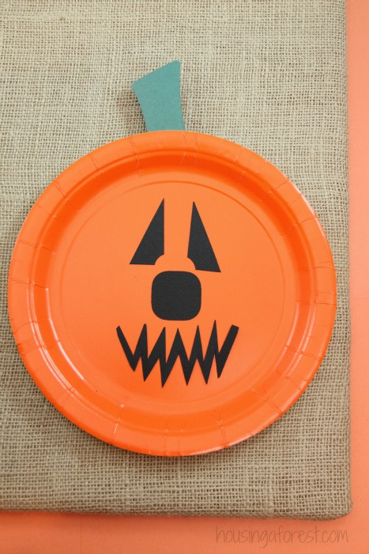

Paperplate Pumpkin
Amount
1Items needed:
- 1 orange Paper Plates
- glue
- Black and Green Construction Paper
- scissors
Instructions:
- First, cut the green construction paper into a stem shape, then glue to the back of the paper plate.
-
Next, cut the black construction paper into a eye, nose, and mouth shape. Glue these items to the
center of the paper plate.
